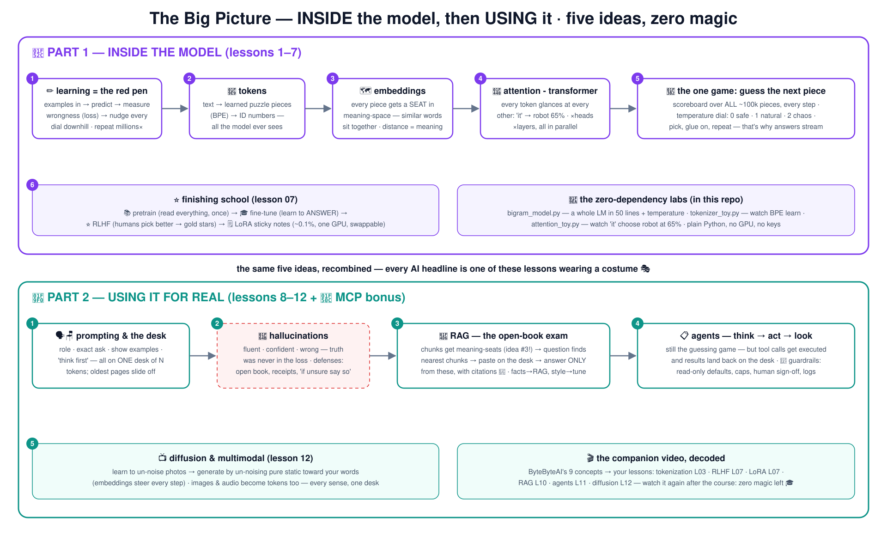

🧠 Learn AI the school way
How models actually work (tokens → embeddings → attention → RLHF & LoRA), then
how to use them well (prompting, RAG, agents, diffusion) — every concept as a school story,
every lesson with a numbered diagram and a hands-on lab. The labs are zero-dependency
Python : no GPU, no API key, no pip install.
🎬 Companion video:
9 AI Concepts Explained in 7 minutes (ByteByteAI) — the aerial view;
this course is the slow ground tour of every concept it names.
🧩 tokens 🗺️ embeddings
👀 attention ⭐ RLHF & LoRA
📖 RAG 📋 agents 📺 diffusion
🔬 Part 1 — INSIDE the model
rules are grown from examples, not written 📖
text becomes puzzle pieces 🧩 seated by meaning 🗺️
one game: guess the next piece 🎲 — with glancing 👀
finishing school: etiquette, gold stars, sticky notes ⭐
🧰 Part 2 — USING it for real
ask the librarian well; mind the small desk 🗣️🪑
the confident kid makes things up — defenses 🙋
open-book exams (RAG) 📖 and hall passes (agents) 📋
un-blur the static: diffusion & multimodal 📺
🗺️ The big picture — one diagram, both worlds
The whole course on one canvas. Click for the
4K version .

🔬 Part 1 — inside the model (lessons 1–7)
One git branch = one idea; branch 05 contains lessons 01–05. Labs run with plain Python 3.
🧰 Part 2 — using it for real (lessons 8–12 + bonus 13)
No installs here either — the labs use any chatbot you already have, plus paper and honesty.
# take the course locally:
git clone https://github.com/BaluRaut/learn-ai-school.git
cd learn-ai-school
python3 demo/bigram_model.py # a language model in 60 seconds
git checkout lesson-01-what-is-ai # then lesson by lesson🔌
Went deep on lesson 13? There is now a whole
MCP school — with a real server & client in the repo and 5 use cases with sequence diagrams.
📐 The lesson diagrams — follow the numbers
Every lesson as one numbered box-and-arrow diagram (purple = inside the model,
teal = using it) — also on a standalone page .
1 📖 What is AIRulebooks vs learning from examples — the rules are grown, not written.
📜 the rulebook way if ears AND whiskers AND tail… rule #41 breaks on cartoon cats 💥 🐱 the examples way 10,000 photos: cat / not-cat ✏️ training rules GROW inside 🧠 model answers even for NEW cats 1 2 AI ⊃ machine learning ⊃ deep learning ⊃ LLMs — this course walks inward 3
2 ✏️ TrainingPractice tests + the red pen — loss and tiny downhill nudges.
📚 examples question + true answer 🧠 model millions of dials ✍️ prediction 🔴 loss HOW wrong? 1 ⛰️ gradient descent: nudge EVERY dial slightly downhill 2 repeat millions of times 🧪 validation set = unseen questions — catches memorizers (overfitting) 3
3 🧩 TokensCutting text into puzzle pieces — why 'strawberry' is hard.
📝 text 'the robot reads' 🧩 tokenizer - BPE glue the most frequent pair, repeat thousands of times 🔢 token IDs [464, 9379, 9743] 1 2 the model sees ONLY these pieces — never words, never letters: why 'how many R's in strawberry' is hard 🍓 · why pricing is per-token · why some languages cost 3× 3
4 🗺️ EmbeddingsThe seating chart of meanings — similar words sit together.
🧩 token 'cat' 🗺️ its seat coordinates [0.31, -1.2, 0.88, …] ×768 learned, not drawn the seating hall - meaning space cat 🐱 kitten dog 🐶 📎 stapler - far 1 2 distance = similarity → semantic search, RAG (L10), king−man+woman≈queen 👑 3
5 🎲 Next-token predictionThe sentence-completion game, with a temperature dial.
📝 pieces so far 'The dog chased the' 📊 scoreboard over ALL pieces cat 24% · ball 17% · car 9% … stapler 0.0001% one full scoreboard per step 🎛️ temperature 0: safe · 1: natural 2: chaos 1 2 🧩 picked: 'cat' — glue on 3 repeat — that's why answers STREAM
6 👀 AttentionKids glancing around the class — who does 'it' refer to?
'The robot dropped the ball because IT was heavy' 👀 'it' glances around learned weights: robot 65% · heavy 14% · ball 5% 🎨 blend 'it' comes out ROBOT-flavored 🤖 🏗️ transformer this, ×many heads, ×32 layers, ALL tokens in parallel 1 2 3 query·key similarity on the seats (L04) → softmax → weighted blend — demo prints these exact numbers
7 ⭐ RLHF & LoRALibrary, etiquette class, gold stars — and sticky notes.
📚 pretraining read EVERYTHING months · $$$M · once 🎓 fine-tuning Q→A examples: learn to ANSWER ⭐ RLHF humans pick better → taste-judge → nudge 🤖 the assistant 1 2 3 🗒️ LoRA: freeze the brain, learn tiny sticky notes ~0.1% of the size · one GPU · swappable per customer 4
8 🗣️ Prompting & contextHow you ask the librarian — and the small desk it fits on.
🪑 the desk - context window: N tokens, that's ALL there is 📜 role + rules (system) 💬 conversation - oldest slides off 📎 pasted docs + examples ✍️ the answer itself - also here! 🗣️ the craft say who to be · exact ask · show examples (few-shot) · 'think step by step first' 1 🕳️ not on the desk = doesn't exist: no memory between chats · middle gets skimmed 2 same model, 10× better output — prompting is iteration, not incantation 3
9 🙋 HallucinationsThe confident kid who never says 'I don't know'.
❓ thin-shelf question 'books about Mongolian pirates?' 🧠 the machine produce the LIKELIEST continuation truth was never in the loss (L02) 🙋 fluent · confident · WRONG realistic fake title, fake author, page count 1 2 📖 defense 1: facts ON the desk (paste them — or RAG, L10) 🧾 defense 2: 'quote the exact sentence you base this on' 🤷 defense 3: 'if unsure, say so' + verify anything you'd act on 3
10 📖 RAGThe open-book exam, automated with the seating chart.
1 before exam season - once 📚 handbook → ✂️ chunks 🗺️ vector DB seat per chunk ❓ question embedded too 📍 nearest seats = most relevant chunks 🪑 the desk question + those chunks + 'answer ONLY from these, cite' 🧾 2 3 4 facts → RAG · style → fine-tune (L07) — the rule of rules
11 📋 Agents & toolsA student with a to-do list and a hall pass.
📋 goal 'organize the class picnic' 🧠 THINK next-token planning in words (L05!) 🧰 ACT writes a tool call: roster.count() 👀 LOOK result → desk: 23 kids 1 2 3 loop until the goal is met 🚧 guardrails: read-only tools by default · spending caps · human sign-off for field-trip forms · logs of every step 4
12 📺 Diffusion & multimodalUn-blurring TV static, step by step, toward your words.
🎨 homework, millions of times 🐱 photo +noise ×1000 📺 static learn: predict the noise 📺 pure static 🌀 un-noise ×20-50 steps prompt's meaning-seat (L04) steers each step 🐱👑 'cat with a crown' 1 2 👀 multimodal: images/audio become tokens too — same desk, same attention (L03/L06) 3
13 🔌 Bonus: MCPThe universal plug — deep-dive course: learn-mcp-school 🔌
🍝 before MCP every app × every tool = a hand-built adapter (N×M) 🏫 hosts - the rooms Claude Desktop · IDE · your agent — standard sockets 🔌 🔬 MCP servers files · GitHub · your DB — standard plugs 1 2 each server announces: my TOOLS 🧰 · my RESOURCES 📁 · my PROMPTS 📜 discover (tools/list) → call (tools/call) → result lands on the desk — L11's loop, standardized 3 🚧 a server runs with YOUR permissions — installing one = installing software; L11 guardrails apply double 4
Start Lesson 01 →
🗓️ Study plan (4 weeks)
📐 All 13 lesson diagrams
⏮️ Before & trade-offs
{kind=link}